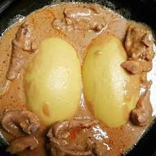

Home
Agoun Recipe

Description
Agoun is a cherished traditional dish from Benin that masterfully blends the smooth, creamy texture of pounded yam with a rich, savory peanut sauce. Enhanced by tender, well-seasoned meats and complementary ingredients, this dish delivers a comforting yet vibrant flavor profile that captivates the senses.
The robust peanut sauce—infused with garlic, tomatoes, and aromatic spices—perfectly envelops succulent meats to create a deeply satisfying experience. Ideal for family gatherings or festive occasions, Agoun not only celebrates Beninese culinary heritage but also offers a harmonious balance of textures and tastes in every bite.
Ingredients
- 1 kg yam (Igname), peeled and cut into chunks
- Water, for boiling
- Salt, to taste
- 1 cup roasted peanuts (or natural peanut butter)
- 2 cups water or broth (adjust for desired consistency)
- 2 cloves garlic, minced
- 1 small onion, finely chopped
- 2 tomatoes, blended (or 1 cup tomato puree)
- 1 chili pepper, finely chopped (optional)
- 1 teaspoon smoked paprika (optional)
- 2 tablespoons vegetable oil
- 500g assorted meats (beef, chicken, or goat), cut into bite-sized pieces
- 1 smoked fish (optional), flaked
- 1 bay leaf (optional)
- Additional seasonings (e.g., thyme, bouillon cube), to taste
Steps
- Prepare the Pounded Yam
- Make the Peanut Sauce
- Cook the Meats
- Assemble and Serve